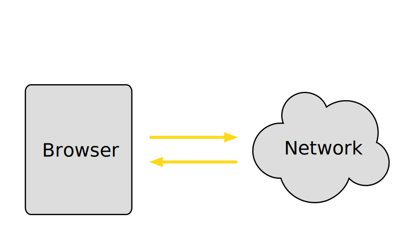

Native apps
Compile to native
Progressive Web Apps
- Linkable
- Responsive
- App-like-interactions
- Connectivity independent
- Safe
- Discoverable
- Re-engageable
- Fresh
- Installable
Alew Russell & Frances Berriman
infrequently.org/2015/06/progressive-apps-escaping-tabs-without-losing-our-soul
Any site can be a PWA
- HTTPS
- Service Worker
- Manifest JSON file
Jeremey Keith
adactio.com/journal/13884
Manifest
Service Worker
Network Request
Failure and frustration
- No nearby cell tower
- Flaky Wifi
- Traffic spikes, e.g a major event
- ISP trouble
- Power outage
- Site server is down
Caching Strategy: Stale while revalidate
 Source: The Offline Cookbook by Jake Archibald
Source: The Offline Cookbook by Jake Archibald
Cache First (Cache Falling Back to Network)
 Source: The Offline Cookbook by Jake Archibald
Source: The Offline Cookbook by Jake Archibald
Network or cache
Source: The Service Worker Cookbook by MozillaHTTPS
Tools and Resources
Lighthouse

Audits for performance, accessibility, progressive web apps, and more.
webhint
A set of libraries that can power a production-ready service worker for your Progressive Web App.
Thank you
Aaron Manire